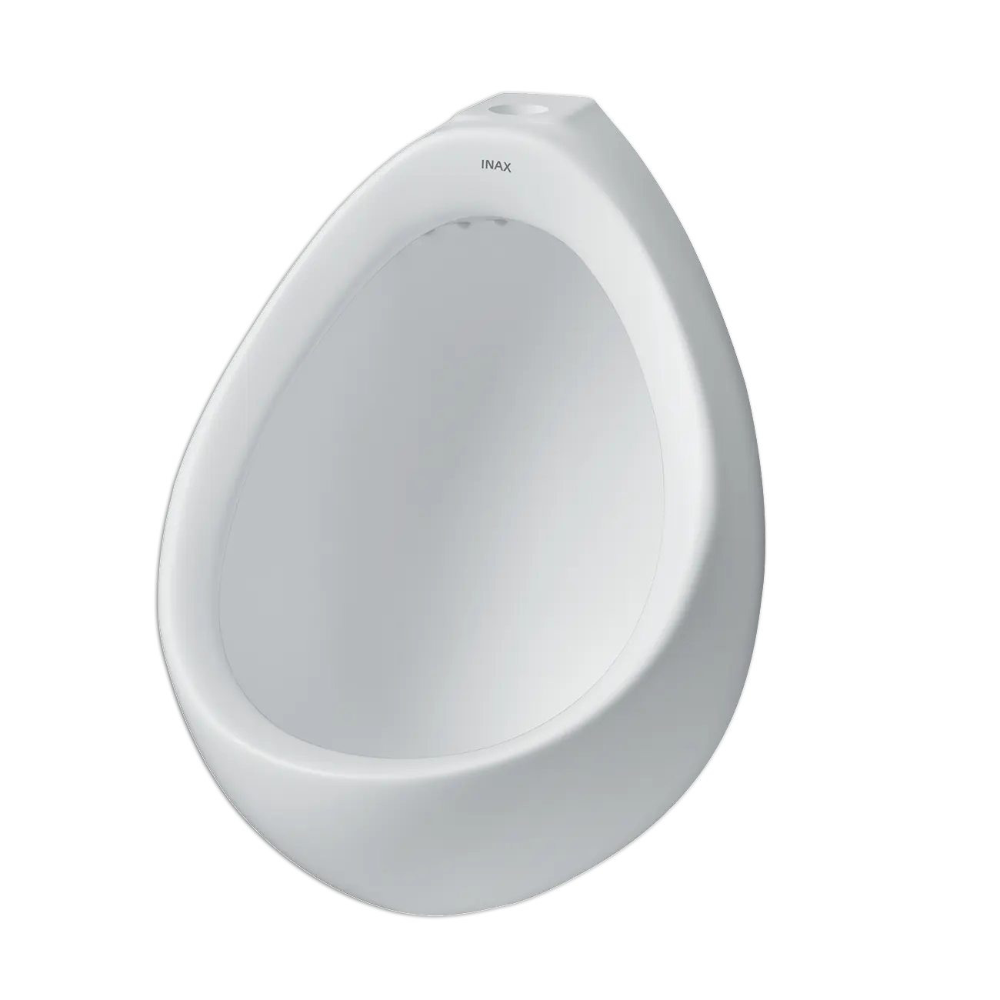
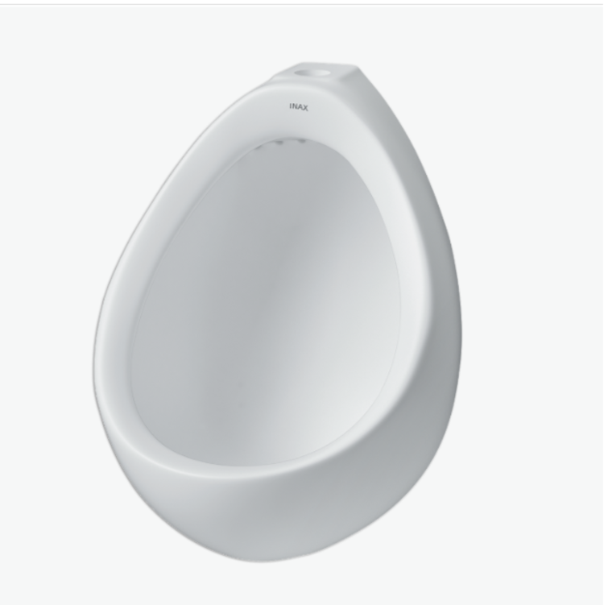
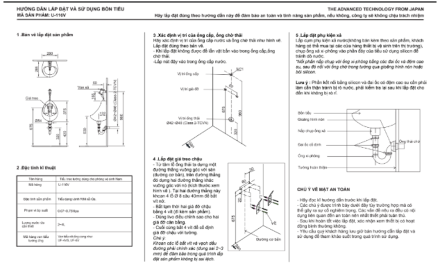

Bồn tiểu nam U-116V nổi bật với thiết kế treo tường đơn giản nhưng vẫn đảm bảo hiệu quả vệ sinh. Sản phẩm được xem như là giải pháp tối ưu hóa không gian và chi phí xây dựng trong các công trình dân dụng và công nghiệp, đặc biệt ở khu trung tâm thương mại và các tòa nhà cao tầng.Ưu điểm của bồn tiểu nam U-116VThiết kế dạng treo tường giúp tối đa hóa diện tích sử dụng của phòng vệ sinh, phù hợp với các không gian nhỏ hẹp hoặc các khu vực cần lắp đặt số lượng lớn thiết bị.Kích thước 285 x 280 x 375 mm siêu nhỏ gọn giúp vẻ ngoài trông tinh tế, gọn gàng và tiết kiệm được không gian.Chất liệu sứ cao cấp, bền bỉ với bề mặt nhẵn bóng, giúp việc lau chùi dễ dàng hơn, giữ vẻ ngoài sản phẩm trông như mới sau một thời gian dài sử dụng.Khả năng hoạt động trong phạm vi áp lực nước linh hoạt, từ 0.07 - 0.75 MPa. Với phạm vi này, bồn tiểu nam U-116V vận hành hiệu quả ở nhiều hệ thống cấp nước khác nhau, từ công trình có áp lực nước yếu đến áp lực nước mạnh, đảm bảo mỗi lần xả đều sạch sẽ.Hệ thống xả được tối ưu hóa để cuốn trôi mọi chất thải hiệu quả, giữ lòng bồn tiểu luôn khô thoáng và ngăn mùi hôi tích tụ.Ngoài ra, với việc không bao gồm ống thải khu mua U-116V, bạn có thể linh hoạt chọn loại ống thải phù hợp với cấu trúc đường ống có sẵn của công trình hoặc dựa vào ngân sách cụ thể, giúp kiểm soát chi phí hiệu quả hơn.Là sản phẩm của INAX, bồn tiểu nam U-116V được bảo chứng bằng uy tín và công nghệ sản xuất Nhật Bản, mang đến sự an tâm về chất lượng và độ bền lâu dài, giảm thiểu chi phí bảo trì về sau.Nhìn chung, bồn tiểu nam INAX U-116 là giải pháp thông minh và thực dụng cho mọi không gian vệ sinh. Với sự kết hợp giữa thiết kế gọn nhẹ, chất liệu bền bỉ và hiệu suất vận hành ổn định trong dải áp lực nước rộng, đây là sự đầu tư mang lại giá trị kinh tế và chất lượng chuẩn mực của thiết bị vệ sinh INAX.Để được tư vấn chi tiết về sản phẩm hoặc hỗ trợ bảo hành, Quý khách vui lòng liên hệ Hotline tư vấn và bảo hành: 18006633.Hướng dẫn lắp đặt bồn tiểu nam U-116VFile hướng dẫn lắp đặt chi tiết: HDLD U-116V.pdfThông số kỹ thuậtChất liệuSứDạngTreoKích thước285 x 280 x 375 mm (Sâu x Rộng x Cao)Đặc điểm- Áp lực nước 0.07 - 0.75 MPaThương hiệuINAXKhác- Sản phẩm không bao gồm ống thải - Hotline tư vấn và bảo hành: 18006633
Bồn tiểu nam U-116V
Bồn tiểu thương hiệu INAX.
Đã cập nhật danh sách yêu thích.
DANH MỤC: Bồn tiểu
MÃ SẢN PHẨM: U-116V
DEPTH: mm
HEIGHT: mm
WIDTH: mm
Bồn tiểu nam U-116V nổi bật với thiết kế treo tường đơn giản nhưng vẫn đảm bảo hiệu quả vệ sinh. Sản phẩm được xem như là giải pháp tối ưu hóa không gian và chi phí xây dựng trong các công trình dân dụng và công nghiệp, đặc biệt ở khu trung tâm thương mại và các tòa nhà cao tầng.Ưu điểm của bồn tiểu nam U-116VThiết kế dạng treo tường giúp tối đa hóa diện tích sử dụng của phòng vệ sinh, phù hợp với các không gian nhỏ hẹp hoặc các khu vực cần lắp đặt số lượng lớn thiết bị.Kích thước 285 x 280 x 375 mm siêu nhỏ gọn giúp vẻ ngoài trông tinh tế, gọn gàng và tiết kiệm được không gian.Chất liệu sứ cao cấp, bền bỉ với bề mặt nhẵn bóng, giúp việc lau chùi dễ dàng hơn, giữ vẻ ngoài sản phẩm trông như mới sau một thời gian dài sử dụng.Khả năng hoạt động trong phạm vi áp lực nước linh hoạt, từ 0.07 - 0.75 MPa. Với phạm vi này, bồn tiểu nam U-116V vận hành hiệu quả ở nhiều hệ thống cấp nước khác nhau, từ công trình có áp lực nước yếu đến áp lực nước mạnh, đảm bảo mỗi lần xả đều sạch sẽ.Hệ thống xả được tối ưu hóa để cuốn trôi mọi chất thải hiệu quả, giữ lòng bồn tiểu luôn khô thoáng và ngăn mùi hôi tích tụ.Ngoài ra, với việc không bao gồm ống thải khu mua U-116V, bạn có thể linh hoạt chọn loại ống thải phù hợp với cấu trúc đường ống có sẵn của công trình hoặc dựa vào ngân sách cụ thể, giúp kiểm soát chi phí hiệu quả hơn.Là sản phẩm của INAX, bồn tiểu nam U-116V được bảo chứng bằng uy tín và công nghệ sản xuất Nhật Bản, mang đến sự an tâm về chất lượng và độ bền lâu dài, giảm thiểu chi phí bảo trì về sau.Nhìn chung, bồn tiểu nam INAX U-116 là giải pháp thông minh và thực dụng cho mọi không gian vệ sinh. Với sự kết hợp giữa thiết kế gọn nhẹ, chất liệu bền bỉ và hiệu suất vận hành ổn định trong dải áp lực nước rộng, đây là sự đầu tư mang lại giá trị kinh tế và chất lượng chuẩn mực của thiết bị vệ sinh INAX.Để được tư vấn chi tiết về sản phẩm hoặc hỗ trợ bảo hành, Quý khách vui lòng liên hệ Hotline tư vấn và bảo hành: 18006633.Hướng dẫn lắp đặt bồn tiểu nam U-116VFile hướng dẫn lắp đặt chi tiết: HDLD U-116V.pdfThông số kỹ thuậtChất liệuSứDạngTreoKích thước285 x 280 x 375 mm (Sâu x Rộng x Cao)Đặc điểm- Áp lực nước 0.07 - 0.75 MPaThương hiệuINAXKhác- Sản phẩm không bao gồm ống thải - Hotline tư vấn và bảo hành: 18006633
DANH MỤC: Bồn tiểu
MÃ SẢN PHẨM: U-116V
DEPTH: mm
HEIGHT: mm
WIDTH: mm